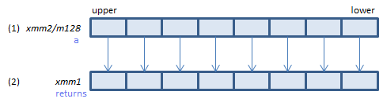
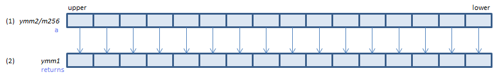

VGETMANTPH - GET MANTissa Packed Half
VGETMANTPH xmm1{k1}{z}, xmm2/m128/m16bcst, imm8 (V5+FP16+VL
__m128h _mm_getmant_ph(__m128h a, _MM_MANTISSA_NORM_ENUM intv, _MM_MANTISSA_SIGN_ENUM sgn)
__m128h _mm_mask_getmant_ph(__m128h s, __mmask8 k, __m128h a, _MM_MANTISSA_NORM_ENUM intv, _MM_MANTISSA_SIGN_ENUM sgn)
__m128h _mm_maskz_getmant_ph(__mmask8 k, __m128h a, _MM_MANTISSA_NORM_ENUM intv, _MM_MANTISSA_SIGN_ENUM sgn)

For each FP16, get the mantissa from (1), perform specified normalization and store the result in (2).
VGETMANTPH ymm1{k1}{z}, ymm2/m256/m16bcst, imm8 (V5+FP16+VL
__m256h _mm256_getmant_ph(__m256h a, _MM_MANTISSA_NORM_ENUM intv, _MM_MANTISSA_SIGN_ENUM sgn)
__m256h _mm256_mask_getmant_ph(__m256h s, __mmask16 k, __m256h a, _MM_MANTISSA_NORM_ENUM intv, _MM_MANTISSA_SIGN_ENUM sgn)
__m256h _mm256_maskz_getmant_ph(__mmask16 k, __m256h a, _MM_MANTISSA_NORM_ENUM intv, _MM_MANTISSA_SIGN_ENUM sgn)

For each FP16, get the mantissa from (1), perform specified normalization and store the result in (2).
VGETMANTPH zmm1{k1}{z}, zmm2/m512/m16bcst{sae}, imm8 (V5+FP16
__m512h _mm512_getmant_ph(__m512h a, _MM_MANTISSA_NORM_ENUM intv, _MM_MANTISSA_SIGN_ENUM sgn)
__m512h _mm512_mask_getmant_ph(__m512h s, __mmask32 k, __m512h a, _MM_MANTISSA_NORM_ENUM intv, _MM_MANTISSA_SIGN_ENUM sgn)
__m512h _mm512_maskz_getmant_ph(__mmask32 k, __m512h a, _MM_MANTISSA_NORM_ENUM intv, _MM_MANTISSA_SIGN_ENUM sgn)
__m512h _mm512_getmant_round_ph(__m512h a, _MM_MANTISSA_NORM_ENUM intv, _MM_MANTISSA_SIGN_ENUM sgn, int sae)
__m512h _mm512_mask_getmant_round_ph(__m512h s, __mmask32 k, __m512h a, _MM_MANTISSA_NORM_ENUM intv, _MM_MANTISSA_SIGN_ENUM sgn, int sae)
__m512h _mm512_maskz_getmant_round_ph(__mmask32 k, __m512h a, _MM_MANTISSA_NORM_ENUM intv, _MM_MANTISSA_SIGN_ENUM sgn, int sae)

For each FP16, get the mantissa from (1), perform specified normalization and store the result in (2).
imm8 bit 1:0
intv |
Normalization Interval |
00b _MM_MANT_NORM_1_2: 1 <= x < 2
01b _MM_MANT_NORM_p5_2: 0.5 <= x < 2
10b _MM_MANT_NORM_p5_1: 0.5 <= x < 1
11b _MM_MANT_NORM_p75_1p5: 0.75 <= x < 1.5
the mantissa is normalized to fit within the range specified. |
imm8 bit 3:2
sgn |
Sign Control |
00b _MM_MANT_SIGN_src: sign is unchanged
01b _MM_MANT_SIGN_zero: sign is set to positive
10b, 11b _MM_MANT_SIGN_nan: if sign of the source is negative, QNaN_Indefinite is stored as the result. |
x86/x64 SIMD Instruction List
Feedback